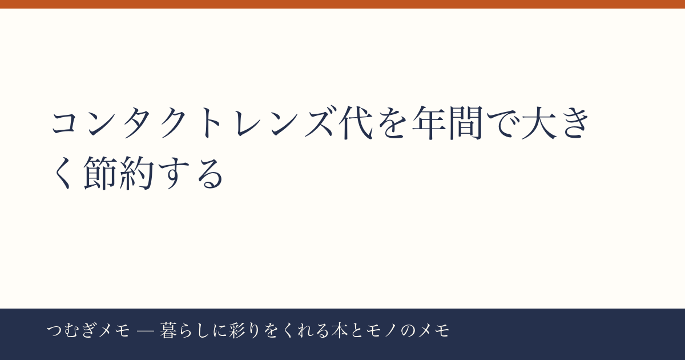

こんにちは、つむぎです。今週の楽天ランキングを眺めていて、あるカテゴリがあまりにも集中していて思わず二度見しました。この記事でわかること：コンタクトレンズが今週これほど売れている理由と、賢い選び方・節約術をまとめて整理します。
今週の要点
- 今週だけで同趣旨のコンタクトレンズ商品が楽天ランキングに8本ランクイン、ワンデー・2weekを問わずまとめ買い需要が急増している
- 「1日使い捨て90枚パック×2箱セット」という大容量フォーマットが主流になり、送料込みの単価勝負に突入している
- UV機能・うるおい成分・含水率の違いを把握するだけで、目の疲れ方と出費が大きく変わる
---
楽天ランキングで今週確認できたコンタクトレンズ関連商品は、ワンデーアキュビュー モイスト・ワンデーアキュビュー オアシス・アキュビュー オアシス（2week）・メダリストワンデープラス・シード ワンデーピュアうるおいプラス・TeAmo CLEAR 1DAY……と、独立した商品として8本がランクインしています。これだけの本数が1週間のランキングに並ぶのは、単なる偶然ではありません。
背景にあるのは「まとめ買いのタイミングを読んだ生活者」の行動です。9月は学校・会社ともに新学期・下半期のスタートで、生活コストを棚卸しするタイミング。コンタクトはランニングコストが高い消耗品だからこそ、「どうせ買うなら90枚×2箱でまとめて」という判断になりやすい。加えてクーポンやポイント倍率が重なる楽天のセール週と見事にマッチしています。
今日できること： まず自分が今使っているコンタクトの「1枚あたり単価」を計算してみましょう。箱の枚数÷購入価格で出ます。90枚パックのまとめ買いと、薬局で30枚ずつ買う場合とで比較すると、同じブランドでも体感以上に差が出ることがほとんどです。
---
今週ランクインした商品だけでも、ワンデーアキュビュー モイスト（レビュー18,889件・★4.66）とワンデーアキュビュー オアシス（レビュー1,304件・★4.73）という同ブランドの2グレードが並んでいます。また、TeAmo CLEAR 1DAY（レビュー14,850件・★4.56）の商品説明には「低含水・高含水が選べる」と明記されており、メーカー側も含水率の選択肢を意識的に打ち出しています。
含水率は目の乾燥感に直結します。高含水レンズは装着直後のうるおい感が強い一方、長時間使用すると涙を吸収しやすくなり夕方に乾燥を感じやすいという特性があります。低含水レンズは最初の装用感がやや硬めに感じる人もいますが、涙を奪いにくいため長時間デスクワークをする人には向いていると言われています。エアコン環境が長い人・ドライアイ気味の人はこの軸で選ぶ視点を持つだけで快適度が変わります。
一方、オアシスシリーズはシリコーンハイドロゲル素材で酸素透過性が高く設計されており、価格はモイストより高めですが、目が疲れやすいと感じる人のリピート評価が安定して高い傾向があります（実際今週ランクインした複数の商品ページで確認できます）。
今日できること： 次に購入するとき、いつも選ぶブランドの「上位グレード」を1箱だけ試してみる。コンタクトはブランドへの慣れで選びがちですが、素材のグレードを一段上げると目の疲れ方が変わることがあります。
---
今週のバズを見ると、コンタクトだけが「定期消耗品を賢く調達する」という行動を示しているわけではありません。炭酸水500ml×48本セット（レビュー17,293件・★4.68）や骨取りサバ1kgの冷凍まとめ買い（レビュー18,889件・★4.51）、ミックスナッツ1kg（レビュー5,780件・★4.72）も同じ週に上位に集まっています。
これらに共通するのは「1回あたりのコストを下げつつ、選ぶ手間も減らす」という設計です。暮らしの中で毎月必ず出ていくお金——コンタクト・飲料・食品——を、まとめて調達できる機会にまとめて動く。このサイクルを意識するだけで、月単位の支出が自然と圧縮されていきます。
コンタクトに関しては、処方箋の範囲内で自分に合うブランドと枚数・フォーマットが確定したら、定期購入サービスの活用も選択肢に入ります。ある程度使い慣れたらコスト構造を固定してしまうのが、消耗品節約の王道です。
また、暮らし全体を俯瞰する情報を取り入れる習慣として、ライフスタイル誌の定期購読も一つの手段です。（PR）雑誌を定期購読するなら最大70%割引で電子書籍も選べるFujisan.co.jp 雑誌のオンライン書店を見るが使いやすく、健康・美容・暮らし系の雑誌を1冊単価で読み比べる入口としておすすめです。
今日できること： 自分の「毎月必ず買うもの」を3つ書き出して、それぞれ「まとめ買いできるか・定期購入があるか」を確認する。コンタクトはその最優先候補のはずです。
---
Q. ワンデーをまとめ買いする場合、使用期限は大丈夫？
未開封のワンデーコンタクトは製造から数年の使用期限が設定されていることがほとんどです。購入前に商品ページ・箱の記載を確認する習慣をつけましょう。90枚×2箱（180枚）は片眼なら半年分、両眼なら約3か月分なので、通常の使用ペースであれば期限内に使いきれます。
Q. ブランドを変える場合、眼科への相談は必要？
含水率・素材・ベースカーブ（BC）が変わる場合は、眼科での確認を経るのが安全です。特にシリコーンハイドロゲル素材に初めて切り替える場合、フィット感が変わることがあります。同じブランド内のグレードアップ（例：モイスト→オアシス）でもBCや直径に違いがある場合があるので、処方箋を確認してから購入しましょう。
Q. UV機能付きのレンズはサングラス代わりになる？
UV機能付きコンタクトは角膜に当たる紫外線は一定量カットしますが、目の周りの皮膚や白目の部分はカバーできません。UV対策としてはサングラスと組み合わせることが前提で、コンタクトのUV機能はあくまで「ないよりある方がいい」という位置づけです。
---
今週は「コンタクトレンズのまとめ買い潮流」に絞って書きました。8本ものランクインという事実は、単品ではなく「消耗品を賢く調達する生活設計」への関心が高まっているサインだと感じています。
選び方の軸（含水率・素材・枚数）を一度整理しておくと、次の購入判断がぐっと楽になります。ブックマークしておいて、次回購入前に見返してもらえると嬉しいです。
なお、このブログ「つむぎメモ」はAIと協力しながら運営している実験的なメディアです。情報の選択・分析・読者への伝え方をAIとディスカッションしながら記事を作っており、その過程ごと楽しんでいます。X（@tsumugi_memo15）でも日々の発見を発信中です。また来週。
📚 目次へ